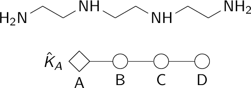
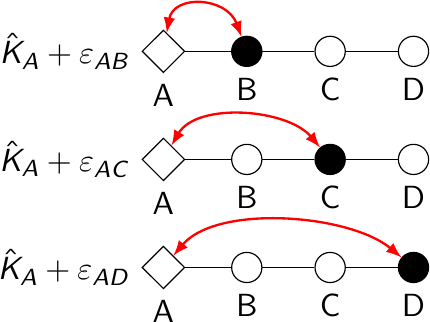
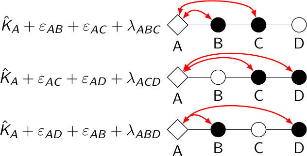
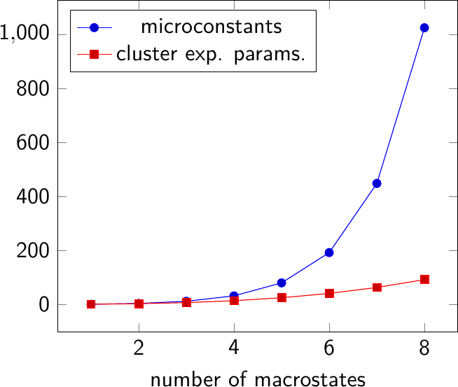

Algorithm Details¶
Microstate Nomenclature¶
A molecule with N protonation sites can have H protons arranged in \(N \choose H\) ways. The protonation centre j can be either protonated sj =1 or deprotonated sj =0. Therefore, a microstate can be defined by a collection of binary parameters {sj} such as {0, 1, 0, 0}.
See also
Cluster Expansion¶
The algorithm is largely based on the Cluster Expansion Method by Borkovec and Koper ([Borkovec2000] and [Borkovec2002]) that also incorporates the simplifications arising from the molecule symmetry from Szakács and Noszál ([Szakacs1999]). In this approach, the free energy F can be decomposed into the sum of parameters of first, second and third order.
First-order parameters can be assimilated to the raw protonation constant of a particular site neglecting any external influence.
{kind=link}
Second-order parameters quantify the influence in the change of the microconstant of a particular site when the neighbour site is protonated but the rest of neighbouring sites are not. We assume that the influence is reciprocal and equal: \(\varepsilon_{ij} = \varepsilon_{ji}\) and that the self-influcence is zero: \(\varepsilon_{ii} = 0\).
{kind=link}
Third-order parameters quantify the change in second-order parameters when the neighbour of a neighbour is protonated. We assume again that the reciprocal influence is the same: \(\lambda_{ijk} = \lambda_{jik} = \lambda_{ikj} = \lambda_{kij} = \lambda_{jki} = \lambda_{kij}\) and the self-influence is zero: \(\lambda_{iii} = 0\), \(\lambda_{iij} = 0\), etc.
{kind=link}
The expansion could go on with higher-order parameters, however the absolute value of the parameters approach zero as the distance increases and for a distance larger than two it can safely be considered zero.
The total number of parameters would be
- n first-order parameters
- \({n \choose 2} = \frac{n(n-1)}2\) Second-order parameters
- \({n \choose 3} = \frac{n(n-1)(n-2)}3\) Third-order parameters
As the system grows larger and larger, the number of microconstants grows exponentially as \(2n^{(n-1)}\), but with the cluster expansion capped to third-order only experiments a polynomial growth.
{kind=link}
Symmetry Simplification¶
Most molecules have some kind of symmetry. This means that some protonation centres are equivalent and, consequently, the number of parameters is reduced because they can be constrained to have the same value.
| n | symmetry | without cluster expansion | with cluster expansion | with symmetry simplification | example |
|---|---|---|---|---|---|
| 2 | A2 | 3 | 3 | 2 | ethylenediamine |
| 2 | AB | 3 | 3 | 3 | alanine |
| 3 | A3 | 12 | 7 | 3 | trisaminoethylamine |
| 3 | A2B | 12 | 7 | 5 | citrate |
| 3 | ABC | 12 | 7 | 7 | inositol phosphate |
| 4 | A4 | 32 | 14 | 3 | EDTA (carboxylate) |
| 4 | A3B | 32 | 14 | 6 | |
| 4 | A2B2 | 32 | 14 | 7 | |
| 4 | A2BC | 32 | 14 | 10 | |
| 4 | ABCD | 32 | 14 | 14 | trilysine (amino groups) |
| 5 | A5 | 80 | 25 | 3 | |
| 5 | A4B | 80 | 25 | 6 | |
| 5 | ABCDE | 80 | 25 | 25 | |
| 6 | A6 | 192 | 41 | 3 | |
| 6 | A5B | 192 | 41 | 6 | |
| 6 | A4B2 | 192 | 41 | 8 | triethylenetetraminehexa-acetate (carboxylate) |
| 6 | ABCDEF | 192 | 41 | 41 | corticotropin |
Theoretical Background¶
With this decomposition we can fit the free energy of the system with the following equation:
where β is inverse of the the thermal energy kBT.
It is possible to choose whether to fit only first order, both first and second order or all of them. It is advisable to start with first order only and then progress towards fitting the rest.
With the free energy calculated, the macroconstants can be derived from the following equation.
And then, the probability of each macrostate is calculated
Then, experimental data is fitted to the equation
and the residual is calculated. Parameters are readjusted and the sequence starts over until the sum of the residuals squared are minimized.
where
where
The microstate probability can be defined as
and the conditional probability is
Algorithm Implementation¶
The calculations are carried by SciPy in the background through the
function scipy.optimize.minimize(). The Minimisation
algorithm is the default one for the parameters used: the
L-BFGS-B algorithm. In the future, other algorithms will be available.
The objective function (see fit.fobj()) is passed and minimised.
References¶
| [Borkovec2000] | A Cluster Expansion Method for the Complete Resolution of Microscopic Ionization Equilibria from NMR Titrations, Michal Borkovec and Ger J. M. Koper, Anal. Chem. 2000, 72, 3272-3279. |
| [Borkovec2002] | Resolution of Microscopic Protonation Mechanisms in Polyprotic Molecules, Michal Borkovec, Marcin Brynda, Ger J. M. Koper and Bernard Spiess, Chimia 2002, 56 695–701. |
| [Szakacs1999] | Protonation microequilibrium treatment of polybasic compounds with any possible symmetry, Zoltán Szakács and Béla Noszál, J. Math. Chem. 1999, 26, 139–155. |